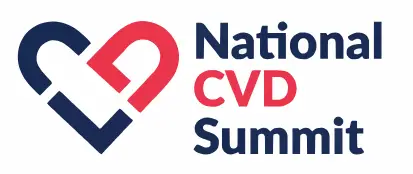
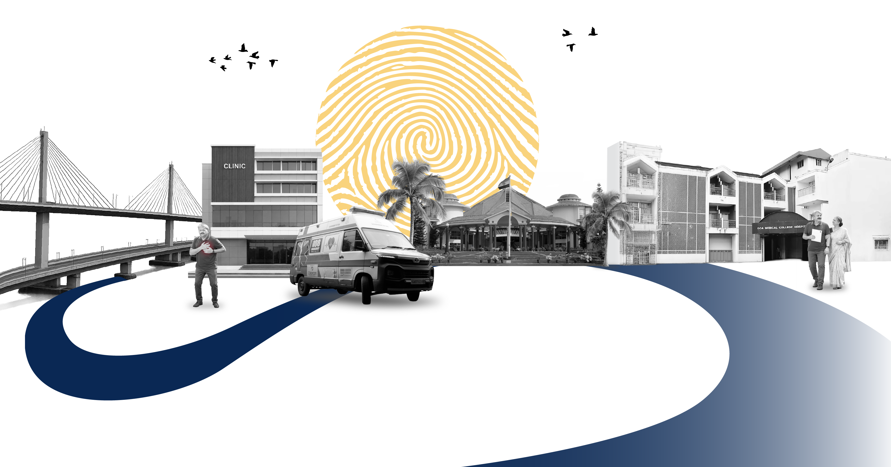
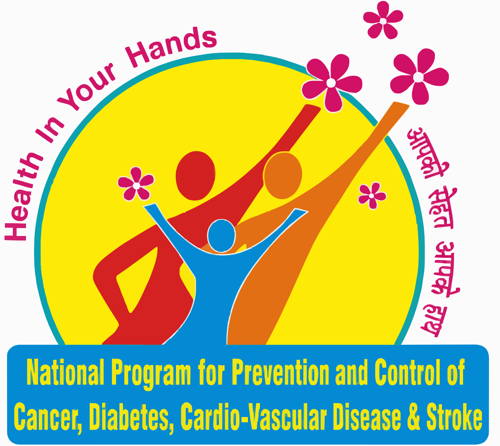
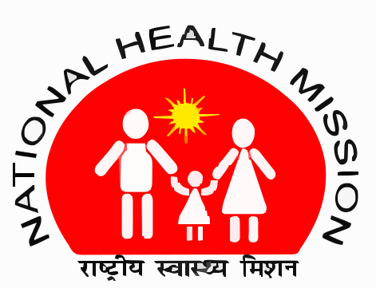

Dr. CN Manjunath
Honourable Member of Parliament, Former Director, Sri Jayadeva Institute of Cardiovascular Sciences & Research, Bengaluru


Cardiovascular disease remains one of India’s
most pressing public health challenges.
While screening
programmes have expanded, primary care infrastructure has strengthened, and clinical expertise and
technology are increasingly available, a critical gap persists between detection and timely
treatment. Patients continue to face fragmented referral pathways, variations in clinical protocols,
delayed diagnosis, and inconsistent follow-up across geographies.
The National CVD Summit 2026, organised by the Government of Goa in association with Tricog Health,
brings together policymakers, government health leaders, clinicians, public health experts, academic
institutions, development partners, and technology stakeholders to address this challenge
collectively.
Taking place from 25-27 September 2026 in Goa, the Summit is designed around the complete
cardiovascular care continuum from screening and risk stratification to diagnosis, treatment,
follow-up, and monitoring. It will provide a platform to examine what is working across states,
identify gaps in implementation, share evidence and real-world experiences, and build greater
alignment across policy, public health, clinical practice, implementation, and technology.
More than a forum for dialogue, the Summit is designed to drive action and measurable outcomes.
Through focused discussions, clinical and implementation sessions, state-level experiences, and
collaborative sessions, it will work towards stronger alignment on CVD care pathways, greater
standardisation of clinical and operational protocols, and the effective use of technology to
support early detection and prevention.
The Summit will culminate in tangible outputs, including national policy recommendations,
standardised clinical protocols, partnership commitments, and the National CVD Summit Declaration,
creating a foundation for continued action beyond the two days.
Leaders from Government Health Missions, Tertiary Care Institutions, and Cardiovascular Research Convene to align India's Cardiac Care Roadmap.
Honourable Member of Parliament, Former Director, Sri Jayadeva Institute of Cardiovascular Sciences & Research, Bengaluru

Consultant Cardiologist, Manipal Hospital Bangalore

Additional Deputy Director General of Health Services & Director(Emergency Medical Relief)

Additional Deputy Director General of Health Services & Director (Emergency Medical Relief)
The Goa STEMI Programme has shown that timely, coordinated cardiac care saves lives. If every state adopts this model, we can build a future where every citizen feels secure, knowing expert emergency heart care is just a 108 call away.
Vishwajit Rane
Hon'ble Health Minister

National Programme for Prevention & Control of Cancer, Diabetes, CVD & Stroke
Government of Goa

National Health Mission
Tricog Health